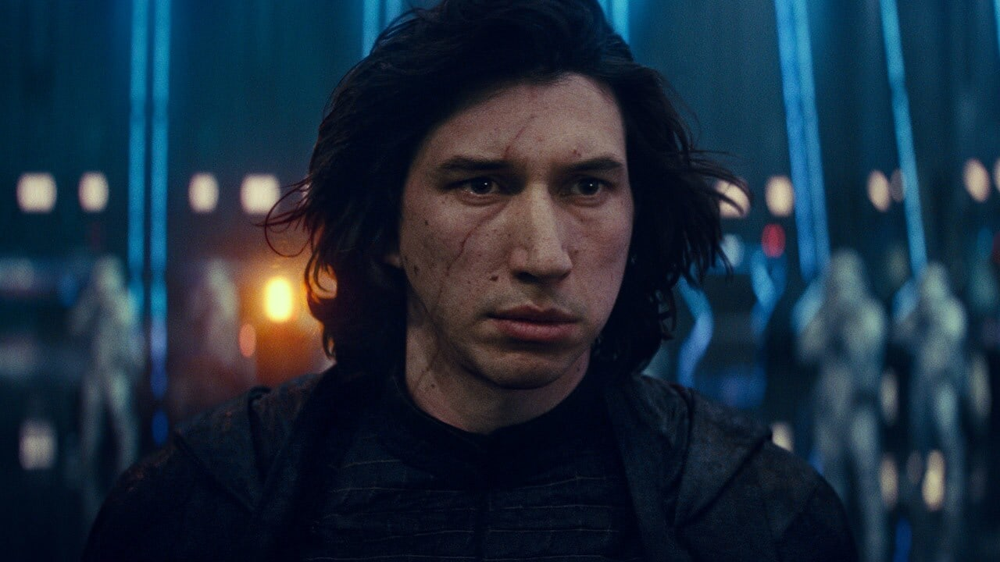
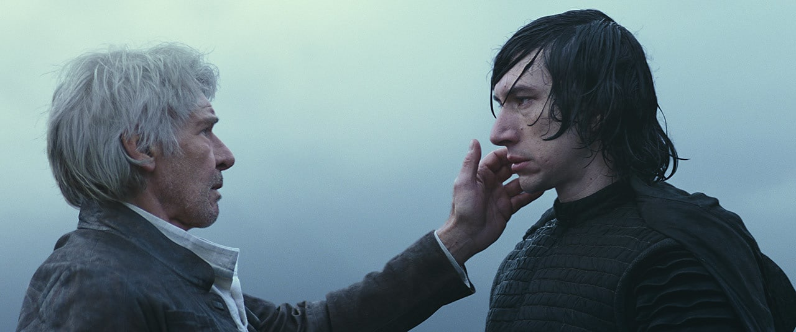

About Me
Supreme Leader Kylo Ren
The son of Han Solo and Leia Organa, Ben Solo was seduced by the dark side of the Force and renamed himself Kylo Ren: leader of the Knights of Ren, champion of the First Order, and apprentice to Supreme Leader Snoke. Driven to destroy the past, Kylo killed his father and his master, supplanting Snoke as Supreme Leader. But he remained haunted by his father’s death, his connection with the mysterious Rey, and the pull of the good in himself. In time, all three would help Ben Solo return to the light.
"He would bring destruction, pain, death, and the end of everything I love because of what he will become. And for the briefest moment of pure instinct, I thought I could stop it. It passed like a fleeting shadow. And I was left with shame and with consequence. And the last thing I saw were the eyes of a frightened boy whose master had failed him."
―Luke Skywalker, about Ben Solo
Kylo Ren was the subject of Force visions before he was even born. Shortly after the Battle of Fortress Vader, the Sith Lord Darth Vader, the Sith persona of the famed Jedi Knight Anakin Skywalker, heard the voice of Ren saying that it was time to "Let the past die" as he slaughtered illusions of Jedi while exploring the portal constructed by Darth Momin in Fortress Vader on Mustafar. In 0 BBY, Ren's voice was also heard by the Jedi Padawan Ezra Bridger, who visited the World Between Worlds—a mystical plane that existed between time and space.
THE FIRST ORDER
A dark side warrior with a mysterious past, Kylo Ren was neither Jedi nor Sith, but a product of both sides’ teachings. Once an apprentice of Luke Skywalker’s, he killed his fellow students and drove Skywalker into exile, becoming a First Order warlord and servant of Supreme Leader Snoke. Kylo was determined to destroy the last remnants of the Jedi, fulfilling the legacy of Darth Vader.
Both the First Order and the Resistance were determined to locate Lor San Tekka, a galactic scout rumored to know how to find Skywalker. Kylo found San Tekka on Jakku and killed him, but not before San Tekka gave a bit of a star map to the Resistance pilot Poe Dameron. When Kylo captured Poe, he discovered the map was now in the memory banks of BB-8, an astromech on Jakku. By finding the lost droid, the First Order could locate Skywalker and extinguish the Resistance’s last hope.
Snoke warned Kylo that there had been an awakening in the Force, and his apprentice would face a test when he confronted his father. Kylo swore his loyalties were only to Snoke. But he was intrigued when he captured Rey, a Jakku scavenger whose Force abilities were raw but very powerful. A mysterious connection seemed to link the two
Kylo faced his father inside the First Order’s Starkiller Base, and struck Han down with his lightsaber. But this shocking act of patricide didn’t make the former Ben Solo feel stronger – somehow he felt weaker. Rey then bested Kylo in a lightsaber duel, sparing his life. Kylo Ren had hoped to end the conflicts that caused him so such pain, but found he remained at war with himself, more lost than ever.
Castigated by Snoke as weak and sentimental, Kylo led a mission to destroy Leia Organa’s Resistance flagship, but found himself unable to fire on his mother. He was also confused by an increasingly strong Force connection with Rey, who had sought out Luke Skywalker to train her in the ways of the Force.
Kylo saw Rey as an ally in destroying the past he hated, and exulted when she left Ahch-To to join him aboard the Supremacy. When Snoke ordered Kylo to kill Rey, he activated Luke’s lightsaber with the Force and struck down his master instead. But Rey refused Kylo’s entreaty to rule a new galactic order and fled. Kylo told Hux that Rey had murdered Snoke, and declared himself the First Order’s new Supreme Leader.
Kylo led the attack on the Resistance’s hideout on Crait, but was lured into a confrontation with Luke Skywalker. Luke apologized to Kylo for failing him, but warned his nephew that if he struck him down he’d always be with him – like Han Solo. Kylo ran Luke through with his blade, only to discover he’d been fooled into fighting a Force projection. Meanwhile, Rey had helped Leia and the surviving Resistance members escape Crait.
Kylo’s control of the First Order was threatened by the stunning return of Emperor Palpatine, who’d created a vast Sith armada on Exegol. Palpatine revealed that he had created Snoke and manipulated Kylo for his entire life. He offered Kylo dominion over the galaxy if he destroyed Rey – whom Palpatine warned wasn’t who Kylo thought she was.
Kylo’s strange connection with Rey had returned and intensified. He learned that Rey was Palpatine’s granddaughter, and the two of them formed a rare, powerful dyad in the Force. Kylo entreated Rey to join him so they could overthrow the Sith Lord, but she refused him, struggling to stay ahead of his relentless pursuit.
Kylo confronted Rey amid the Death Star ruins on Kef Bir, but was distracted by his mother reaching out to him through the Force, an effort that cost Leia her life. Rey ran Kylo through with his own lightsaber, but then healed him with the Force and left him on Kef Bir. Kylo then had a vision of Han, who told his son he loved him. Kylo hurled his Sith lightsaber into the sea, becoming Ben Solo again.
Ben hurried to Exegol and fought Palpatine alongside Rey. Rey destroyed the Sith Lord, but the effort left her dying. Making a sacrifice that recalled that of Anakin Skywalker, Ben gave his life to heal her. Redeemed by this selfless act, he then passed into the Force.
After death of Kylo there was no supreme leader in the Dark Side as the main supereme leader Vader is always busy throwing parties with Boba and playing with his son , luke . So Emperor Palpatine decided to give rebirth to Kylo Ren . As of now Kylo is the acting Supreme Leader after Vader and supports Empire all week only on sunday's he spends time with his daddy Han and mommy Leia.